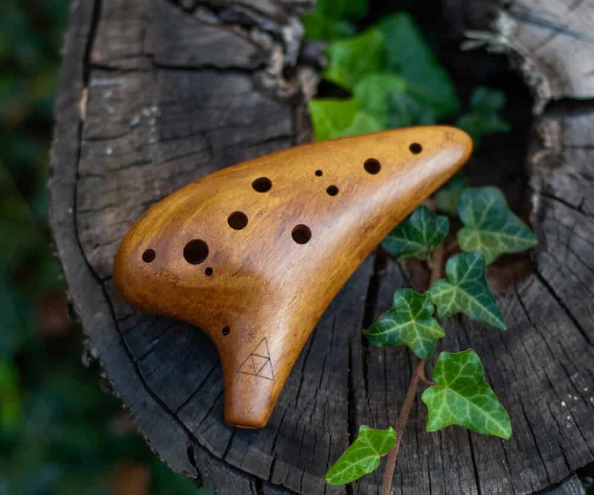

Ocarina

The ocarina (otherwise known as a potato flute) is a wind musical instrument; it is a type of vessel flute. Variations exist, but a typical ocarina is an enclosed space with four to twelve finger holes and a mouthpiece that projects from the body. It is traditionally made from clay or ceramic, but other materials are also used, such as plastic, wood, glass, metal, or bone. The Italian Ocarina was invented in 1853 by 17-year-old Giuseppe Donati, who also gave it the name ocarina. Donati handmade each ocarina from clay, with anything from 7 to 10 finger-holes and a spout for a mouthpiece. [1]
History
The ocarina belongs to a very old family of instruments, believed to date back over 12,000 years. Ocarina-type instruments have been of particular importance as first invented in Chinese and Mesoamerican cultures. For the Chinese, the instrument played an important role in their long history of song and dance. The ocarina has features similar to the xun, another important Chinese instrument (but is different in that the ocarina uses an internal duct, whereas the xun is blown across the outer edge). In Korea, the xun is known as the hun. In Japan, the xun is known as the tsuchibue. Different expeditions to Mesoamerica, including the one conducted by Cortés, resulted in the introduction of the ocarina to the courts of Europe. Both the Maya and Aztecs produced versions of the ocarina, but it was the Aztecs who brought to Europe the song and dance that accompanied the ocarina. The ocarina went on to become popular in European communities as a toy instrument.[1]
One of the oldest ocarinas found in Europe is from Runik, Kosovo. The Runik ocarina is a Neolithic flute-like wind instrument, and is the earliest musical instrument ever reported in Kosovo. The modern European ocarina dates back to the 19th century, when Giuseppe Donati from Budrio, a town near Bologna, Italy, transformed the ocarina from a toy, which played only a few notes, into a more comprehensive instrument (known as the first "classical" ocarina). The word ocarina derives from ucaréṅna, which in the Bolognese dialect means "little goose". An earlier similar instrument was known in Europe as a gemshorn, which was made from chamois horns. [1]
In 1964, John Taylor, an English mathematician, developed a fingering system that allowed an ocarina to play a full chromatic octave using only four holes. This is now known as the English fingering system, and is used extensively for pendant ocarinas. It is also used in several multi-chamber ocarinas, especially in ones that are designed to play more than one note at a time. [1]
The ocarina is featured in the 1998 Nintendo 64 game The Legend of Zelda: Ocarina of Time, as well as its 2000 sequel, The Legend of Zelda: Majora's Mask, which has been credited for increasing the popularity and sales of ocarinas due to the game's strong sales. [1]
References
1. Wikipedia